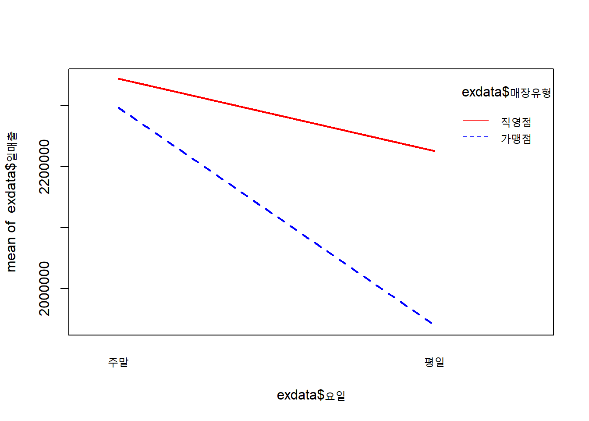
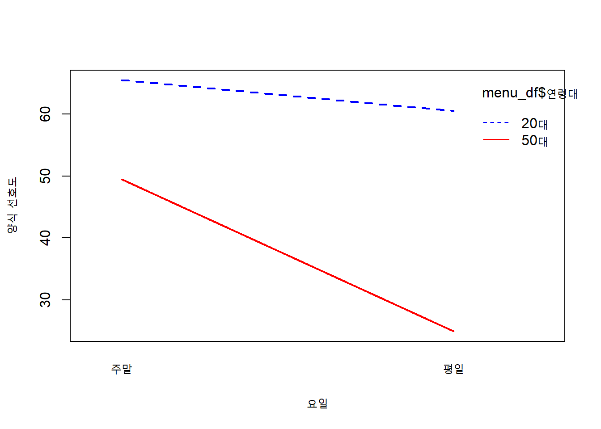
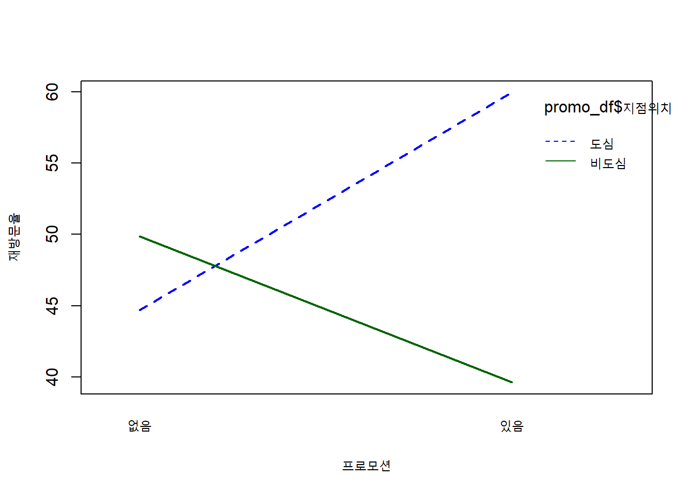
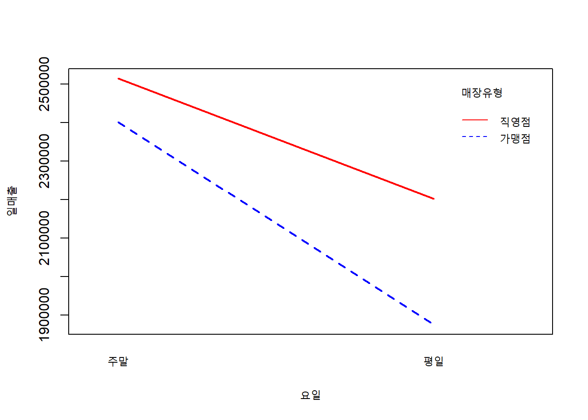
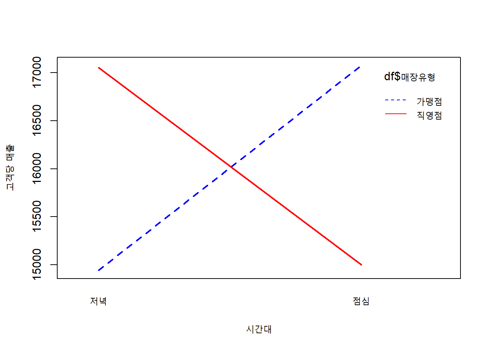

set.seed(123)
n <- 100
store_type <- rep(c("직영점", "가맹점"), each = n/2)
day <- rep(c("평일", "주말"), times = n/2)
sales <- round(rnorm(n, mean = 2000000, sd = 300000) +
ifelse(store_type == "직영점", 200000, -100000) +
ifelse(day == "주말", 150000, 0) +
ifelse(store_type == "가맹점" & day == "주말", 200000, 0))
df <- data.frame(점포ID = paste0("S", sprintf("%03d", 1:n)),
매장유형 = store_type,
요일 = day,
일매출 = sales)
write.csv(df, "ch5_data1.csv", row.names = FALSE)5 이원배치 분산분석
5.1 이원배치 분산분석이란 무엇인가?
5.1.1 복잡한 세상을 설명하는 새로운 도구
현실의 데이터는 단순하지 않다. 외식 프랜차이즈 본사에서 일매출에 영향을 미치는 요인을 분석하려 한다고 가정해보자. 매장의 운영 형태(직영점/가맹점) 과 요일(평일/주말) 이 매출에 영향을 주는지 알고 싶다면 어떻게 해야 할까? 만약 한 가지 요인만 분석한다면 중요한 정보를 놓칠 수 있다. 이때 사용하는 분석 기법이 바로 이원배치 분산분석(Two-Way ANOVA)이다. 이 방법은 두 개의 독립변수가 종속변수에 미치는 각각의 영향(주효과)과 그들이 결합했을 때의 상호작용 효과(Interaction Effect)까지 동시에 평가할 수 있다.
5.1.2 단순한 ANOVA와의 차이
일원배치 분산분석(One-Way ANOVA)은 오직 하나의 요인이 종속변수에 미치는 영향을 분석하는 데 사용된다. 예를 들어 요일만을 기준으로 일매출 평균 차이를 비교한다면 일원배치 ANOVA로 충분하다. 하지만 요일뿐만 아니라 매장 유형도 고려해야 하고, 이 두 요인이 서로 어떤 방식으로 결합하여 매출에 영향을 미치는지 알고 싶다면, 일원배치 ANOVA로는 부족하다.
이원배치 ANOVA는 다음 세 가지를 동시에 추정한다:
- 첫 번째 요인(예: 매장 유형)의 주효과
- 두 번째 요인(예: 요일)의 주효과
- 두 요인의 상호작용 효과
현실 세계에서는 이 세 가지가 모두 중요한 의미를 갖는다. 예를 들어 직영점은 평일에 강세를 보이지만, 가맹점은 주말에 강세를 보이는 경우, 단순한 평균 비교로는 이를 알 수 없다.
5.1.3 주효과와 상호작용 효과의 개념
주효과(Main Effect)란 독립변수 하나가 종속변수에 미치는 평균적인 영향을 의미한다. 예를 들어 요일이 일매출에 미치는 주효과를 살펴보면, 매장 유형과 상관없이 단순히 평일과 주말 사이의 매출 차이를 의미한다.
반면에 상호작용 효과(Interaction Effect)는 두 독립변수가 결합될 때 생기는 새로운 효과를 의미한다. 직영점과 가맹점의 매출 차이가 요일에 따라 달라진다면, 즉 요인의 효과가 다른 요인의 수준에 따라 변한다면, 이때 상호작용이 존재한다고 본다. 실제 외식업에서는 이러한 상호작용이 매우 자주 발생한다.
예를 들어 아래 표는 평일과 주말에 따라 직영점과 가맹점의 일매출 평균을 정리한 것이다.
| 매장 유형 | 평일 평균 매출 | 주말 평균 매출 |
|---|---|---|
| 직영점 | 2,000,000 | 2,200,000 |
| 가맹점 | 1,500,000 | 2,300,000 |
이 경우, 평일에는 직영점이 매출이 높지만 주말에는 가맹점이 더 높다. 이 차이는 단순한 주효과로 설명할 수 없고, 두 요인 간의 상호작용 효과가 존재한다고 해석할 수 있다.
5.1.4 외식산업에서 이원배치 분산분석이 필요한 이유
외식산업은 복합적인 요인들이 얽혀 있는 산업이다. 매출, 만족도, 재방문 의도 등 대부분의 종속변수는 여러 요인의 영향을 동시에 받는다. 예를 들어 고객 만족도는 음식의 종류뿐만 아니라 방문 시간대와 고객 연령대에 따라 달라질 수 있다. 단순히 한 가지 요인만 고려해서는 고객의 행동을 설명하기 어렵다.
예를 들어 점심시간의 한식 선호도는 50대 이상에게서 높지만, 저녁에는 20대가 양식을 더 선호할 수 있다. 이처럼 복잡한 소비자 행동은 두 가지 이상의 요인이 결합하여 발생하는 패턴이기 때문에, 이를 해석할 수 있는 도구가 필요하다. 이원배치 분산분석은 이러한 복잡한 현실의 패턴을 이해하는 데 핵심적인 역할을 한다.
5.1.5 후속 실습을 위한 데이터셋 소개
다음 실습에서는 실제 외식 프랜차이즈 데이터를 가정하여, 요일과 매장 유형이 일매출에 미치는 영향을 분석할 예정이다. 실습에 사용할 가상의 데이터는 다음과 같은 구조를 갖는다.
| 점포ID | 요일 | 매장유형 | 일매출 |
|---|---|---|---|
| A01 | 평일 | 직영점 | 2,050,000 |
| A02 | 주말 | 가맹점 | 2,300,000 |
| … | … | … | … |
이 데이터는 R에서 aov() 함수를 통해 분석할 수 있으며, 상호작용 플롯도 함께 그려볼 수 있다. 실제 분석과 실무 전략은 이후 장에서 다루게 된다.
다음 장에서는 외식산업에 적용된 다양한 사례를 바탕으로 이원배치 분산분석을 어떻게 활용할 수 있는지를 자세히 다룬다.
5.2 외식산업에서의 적용 사례
5.2.1 데이터 분석은 결국 현장의 의사결정을 위해 존재한다
데이터는 그 자체로 아무 말도 하지 않는다. 데이터가 진짜 말을 하기 시작하는 순간은 현장의 맥락 안에서 해석될 때다. 이원배치 분산분석이 쓸만한 분석 도구로 자리 잡는 이유는, 현실의 수많은 의사결정이 둘 이상의 요인에 의해 복합적으로 영향을 받기 때문이다.
단순히 “주말 매출이 높다”는 사실만으로는 충분하지 않다. 주말 매출이 높은 이유가 가맹점에만 해당되는지, 직영점에서도 동일한 패턴이 나타나는지, 혹은 두 매장 유형이 서로 다른 방향의 반응을 보이는지까지 파악해야 진짜 전략이 세워진다. 이러한 통찰을 제공하는 도구가 바로 이원배치 분산분석이다.
5.2.2 예제 1: 요일과 매장유형에 따른 일매출 차이
외식 프랜차이즈 본사에서는 종종 다음과 같은 질문에 직면한다. “우리 직영점과 가맹점의 매출 차이는 단순한 위치 때문일까, 아니면 운영방식의 차이 때문일까?” 여기에 더해 “이 매출 차이는 평일과 주말에도 동일하게 유지되는가?”라는 의문이 따라붙는다.
예를 들어 다음과 같은 데이터가 있다고 가정하자.
| 요일 | 매장유형 | 평균 일매출 (원) |
|---|---|---|
| 평일 | 직영점 | 2,000,000 |
| 주말 | 직영점 | 2,300,000 |
| 평일 | 가맹점 | 1,700,000 |
| 주말 | 가맹점 | 2,500,000 |
표만 봐도 가맹점은 주말에 큰 매출 상승을 보이고 있다. 반면 직영점은 주중과 주말의 차이가 비교적 적다. 이 경우 요일과 매장유형 사이에 상호작용 효과가 존재한다고 해석할 수 있다. 본사는 이 정보를 바탕으로 가맹점의 주말 프로모션을 더 강화할 전략을 세울 수 있다.
5.2.3 예제 2: 메뉴 종류와 고객 연령대에 따른 만족도 차이
만족도 조사는 단순히 평균만 비교해서 끝나는 것이 아니다. 특정 연령층이 특정 메뉴를 어떻게 인식하는지를 함께 살펴보는 것이 핵심이다. 예를 들어 20대는 양식 메뉴에 높은 점수를 주지만, 50대 이상은 한식에 더 만족한다면, 전체 평균만으로는 이 미묘한 차이를 파악할 수 없다.
다음은 가상의 만족도 데이터 예시이다.
| 메뉴종류 | 연령대 | 평균 만족도 (5점 만점) |
|---|---|---|
| 한식 | 20대 | 3.8 |
| 한식 | 50대 | 4.5 |
| 양식 | 20대 | 4.6 |
| 양식 | 50대 | 3.9 |
이 경우 연령대와 메뉴 종류 간의 상호작용 효과가 존재한다. 단순히 연령대별 평균 만족도나 메뉴별 만족도만 봐서는 이 차이를 놓치기 쉽다. 실제 마케팅 전략에서는 이 분석 결과를 활용해 연령대별 선호 메뉴 중심으로 점심 메뉴판을 재구성하거나, 연령 맞춤형 추천 메뉴를 제시할 수 있다.
5.2.4 예제 3: 프로모션 유형과 지점 위치에 따른 재방문율 변화
마지막 사례는 지점의 위치와 마케팅 전략의 상호작용에 관한 것이다. 많은 외식 브랜드가 온라인 쿠폰, 할인 행사, 멤버십 적립 등 다양한 프로모션을 진행하지만, 모든 지역에서 같은 효과가 나는 것은 아니다.
예를 들어 도심의 소비자는 할인 쿠폰에 즉각 반응하지만, 외곽 지역의 소비자는 정기 고객 할인 같은 지속성 기반 혜택에 더 민감할 수 있다.
| 프로모션 | 위치 | 재방문율 (%) |
|---|---|---|
| 쿠폰 | 도심 | 55 |
| 쿠폰 | 외곽 | 42 |
| 멤버십 | 도심 | 48 |
| 멤버십 | 외곽 | 60 |
이 경우 프로모션 유형과 지점 위치 간의 교호작용이 존재한다. 단순히 프로모션의 효과를 전체 평균으로만 분석하면 실제로 전략을 오히려 역행하게 될 수 있다. 프랜차이즈 본사는 이 결과를 바탕으로 외곽 점포에는 멤버십 중심의 장기 혜택을, 도심 점포에는 단기 할인 쿠폰을 중심으로 구성할 수 있다.
5.2.5 실습용 데이터 예시 생성 (R 코드)
이제 위에서 설명한 세 가지 사례 중 요일과 매장유형에 따른 일매출 분석을 위한 데이터셋을 먼저 생성한다. 이는 다음 실습에서 R을 통해 직접 이원배치 ANOVA 분석을 수행하는 데 사용된다.
이 코드는 100개의 점포에 대한 가상의 일매출 데이터를 생성한다. 매장 유형과 요일에 따라 평균 매출이 다르게 설정되어 있으며, 이를 통해 이원배치 분산분석을 수행할 수 있다. 생성된 데이터는 ch5_data1.csv 파일로 저장된다.
5.3 이원배치 분산분석의 구조와 해석 방법
5.3.1 분산을 세 부분으로 나누는 이유
이원배치 분산분석은 데이터를 단순히 그룹별로 비교하는 수준을 넘어서, 데이터의 총 분산(Total Variance)을 세 가지 구성 요소로 분해한다는 점에서 강력한 분석도구다. 전체 데이터의 변동은 다음 세 가지로 나뉜다.
1. 요인 A에 의한 분산 (예: 매장유형에 따른 매출 차이)
2. 요인 B에 의한 분산 (예: 요일에 따른 매출 차이)
3. A와 B의 상호작용(Interaction)에 의한 분산
마지막으로, 측정 오차나 설명되지 않는 요인의 영향을 포함하는 오차항(Error) 이 존재한다. 이 네 가지가 합쳐져서 전체 데이터의 분산을 설명하게 된다. 앞에서 했던 설명의 연장선상에서 보자면, 여기서 말하는 오차항(Error)이 바로 그룹 내 분산 (Within Variance)이다. 통계 책마다 서로 조금씩 다른 표현을 사용하기는 하지만 결국 기본 개념은 같은 것이다.
위의 요인 A에 의한 분산과 요인 B에 의한 분산은 앞에서 공부한 일원배치 분산분석의 그룹 간 분산 (Between Variance)이다. 다만, 독립변수가 두 개이기 때문에, 이렇게 두 개의 분산이 된 것이다. 이 두 요인에 의한 효과를 우리는 주효과 (Main Effect)라고 부른다. 그리고, 여기서 말하는 상호작용이란 요인 A의 종속변수에 대한 효과가 요인 B에 의해서 변화가 생기거나, 반대로 요인 B의 종속변수에 대한 효과가 요인 A에 의해서 변화할 경우 우리는 이를 상호작용이라고 부른다.
혹시 이 부분이 어려운 학생은 사전학습의 다음 링크를 이용하여 다시 공부하기 바란다. 상호작용에 대한 이해는 매우 중요하다. 사전학습용 보조교재를 자세하게 읽고 이해하길 바란다.
이 분석은 단순히 집단 간 평균의 차이를 비교하는 것이 아니라, 어떤 요인이 얼마나 데이터를 설명하는지를 수량적으로 파악하는 데 초점이 있다. 사실상 우리가 하는 통계분석은 기본적으로 종속변수의 분산을 독립변수로 얼마나 잘 설명했느냐의 문제이기 때문이다.
5.3.2 제곱합, 자유도, 평균제곱: 분산분석의 세 기둥
각 요인이 데이터를 얼마나 설명하는지를 수치로 나타내기 위해서는 제곱합(Sum of Squares, SS) 을 계산해야 한다. 제곱합은 각 관측값과 전체 평균 혹은 각 요인 평균 간의 차이를 제곱하여 합한 값이다.
다음은 외식업 예제를 바탕으로 요인별 제곱합의 개념을 설명한다.
예시: 매장유형(직영/가맹)과 요일(평일/주말)에 따라 일매출이 측정된 데이터가 있다고 가정한다.
| 매장유형 | 요일 | 평균 매출 |
|---|---|---|
| 직영점 | 평일 | 2,000,000 |
| 직영점 | 주말 | 2,300,000 |
| 가맹점 | 평일 | 1,700,000 |
| 가맹점 | 주말 | 2,500,000 |
이 경우,
- 요인 A(매장유형)에 의한 제곱합: 직영점 vs. 가맹점 간 평균 매출의 차이에서 비롯
- 요인 B(요일)에 의한 제곱합: 평일 vs. 주말 간 평균 매출 차이에서 비롯
- 상호작용 제곱합: 특정 조합(예: 가맹점-주말)에서 유난히 높거나 낮은 매출이 나타나는 경우, 평균값의 단순 차이로 설명되지 않는 변동
각 제곱합에는 그에 해당하는 자유도(df) 가 존재한다. 요인이 두 수준이라면 자유도는 1이다. (그룹 개수 - 1)
- \(\; df_A = a - 1 \; (a: \text{요인 A 수준 수})\)
- \(\; df_B = b - 1 \; (b: \text{요인 B 수준 수})\)
- \(\; df_{AB} = (a - 1)(b - 1)\)
- \(\; df_{Error} = N - ab \; (N: \text{전체 관측치 수})\)
평균제곱(Mean Square) 은 각 제곱합을 해당 자유도로 나눈 값이다. 이 부분이 앞에서 이야기 했듯이, 바로 분산이다.
- \(\; MS_A = SS_A \div df_A\)
- \(\; MS_B = SS_B \div df_B\)
- \(\; MS_{AB} = SS_{AB} \div df_{AB}\)
- \(\; MS_{Error} = SS_{Error} \div df_{Error}\)
이 과정을 거쳐 각 요인의 평균제곱을 오차 평균제곱과 비교한 F-통계량 을 계산할 수 있게 된다.
여기서 오해하면 안되는 것은 기준이 되는 그룹 내 분산 (Within Variance)는 단 한 개만 있으면 된다는 점이다. 그룹 간 분산 (Between Variance)가 세 개라서 그룹 내 분산 (Within Variance)도 세 개가 필요하다고 생각한다면 이는 큰 오해이다. 왜냐하면, 그룹 내 분산 (Within Variance)의 필요성은 그룹 간 분산 (Between Variance)가 얼마나 커야 큰 것인지, 혹은 얼마나 작아야 작은 것인지 판단하기 위한 비교 대상이므로 비교 대상은 고정되어 있어야 기준값으로서 역할을 할 수 있기 때문에 한 개만 있으면 되는 것이다.
5.3.3 F-통계량과 유의확률(p-value)의 해석
이원배치 분산분석의 핵심은 각 요인이 통계적으로 유의미한 영향을 미치는지를 F-통계량과 p-value를 통해 검증하는 데 있다.
F-통계량은 다음과 같이 계산된다.
- \(\; F_A = MS_A \div MS_{Error}\)
- \(\; F_B = MS_B \div MS_{Error}\)
- \(\; F_{AB} = MS_{AB} \div MS_{Error}\)
각 F값은 해당 요인이 종속변수의 분산에 기여하는 비율을 나타낸다. 이 값이 클수록, 해당 요인의 효과가 무작위 변동에 비해 크다는 것을 의미한다. 각 F값에 대한 p-value를 확인하면, 통계적으로 유의한지 여부를 판별할 수 있다. 일반적으로 p < 0.05면 해당 요인의 효과가 유의미하다고 판단한다.
R에서 다음과 같이 이원배치 분산분석을 수행한다.
# 데이터 불러오기
exdata <- read.csv("data/ch5_data1.csv")
# 이원배치 분산분석
fit <- aov(일매출 ~ 매장유형 * 요일, data = exdata)
summary(fit) Df Sum Sq Mean Sq F value Pr(>F)
매장유형 1 6.922e+11 6.922e+11 9.001 0.00344 **
요일 1 1.415e+12 1.415e+12 18.405 4.26e-05 ***
매장유형:요일 1 3.558e+11 3.558e+11 4.627 0.03399 *
Residuals 96 7.383e+12 7.691e+10
---
Signif. codes: 0 '***' 0.001 '**' 0.01 '*' 0.05 '.' 0.1 ' ' 1결과 테이블은 다음과 같은 구조를 갖는다.
| Source | Df | Sum Sq | Mean Sq | F value | Pr(>F) |
|---|---|---|---|---|---|
| 매장유형 | 1 | … | … | … | … |
| 요일 | 1 | … | … | … | … |
| 매장유형:요일 | 1 | … | … | … | … |
| Residuals | N-4 | … | … |
여기서 매장유형:요일의 항목이 상호작용 효과를 나타낸다.
5.3.4 상호작용이 존재할 때의 해석상의 주의사항
상호작용 효과가 통계적으로 유의미할 경우, 주효과만 해석하는 것은 위험하다. 상호작용이 존재한다는 것은 한 요인의 효과가 다른 요인의 수준에 따라 달라진다는 의미이기 때문이다.
예를 들어 가맹점은 평일에 낮은 매출을 보이지만, 주말에는 직영점을 뛰어넘는 매출을 보인다면, 단순히 “직영점이 더 매출이 높다”는 해석은 잘못된 결론이다. 이 경우 해석은 다음과 같이 구성되어야 한다.
- 요일에 따른 매출 차이는 매장유형에 따라 달라진다
- 주말에는 가맹점이 더 높은 매출을 기록하지만, 평일에는 직영점이 더 높다
- 두 요인이 결합될 때 나타나는 효과는 독립적인 주효과로 설명할 수 없다
R에서는 interaction.plot() 함수를 활용하여 시각적으로 교호작용을 탐색할 수 있다.
interaction.plot(exdata$요일, exdata$매장유형, exdata$일매출,
col = c("blue", "red"), lwd = 2, legend = TRUE)
이 그래프에서 두 선이 서로 평행하지 않다면, 상호작용이 존재한다고 판단할 수 있다. 특히 선이 서로 교차하거나 벌어지는 형태라면 그 효과는 더 크다고 해석할 수 있다.
5.3.5 실제 분석 결과의 의미와 실무적 함의
- 분석 결과, 매장유형, 요일, 매장유형:요일 세 항목이 모두 유의하다면, 본사는 다음과 같은 전략을 세워야 한다.
- 직영점은 평일 매출이 강하므로 점심 메뉴 중심의 마케팅에 집중
- 가맹점은 주말 매출이 강하므로 주말 타겟 이벤트 강화
- 전체 매출을 일괄적으로 비교하지 말고, 조건별 맞춤 전략 수립
단순한 평균 비교에 비해 이원배치 분산분석은 정교하고 복합적인 의사결정을 가능하게 하는 분석 도구다. 외식산업과 같이 환경과 고객군이 다양하게 얽힌 분야에서는 특히 강력한 통찰을 제공한다.
5.4 상호작용 효과: 단순한 평균 차이로 설명되지 않는 현상
5.4.1 평균의 함정, 상호작용의 힘
많은 학생들이 데이터 분석을 배울 때 평균 비교를 가장 먼저 접한다. 메뉴별 만족도, 요일별 매출, 지역별 재방문율 등을 평균으로 비교하면 전반적인 차이는 파악할 수 있다. 하지만 현실은 평균보다 복잡하다. 두 개의 요인이 함께 작용할 때, 개별적으로는 나타나지 않던 패턴이 드러나는 경우가 많다. 이러한 현상이 바로 상호작용 효과(Interaction Effect)다.
단순한 주효과는 요인 A 또는 요인 B가 종속변수에 미치는 독립적인 평균 영향을 의미한다. 반면 상호작용은 요인 A의 효과가 요인 B의 수준에 따라 달라지는 패턴을 설명한다. 실제 외식업의 마케팅, 메뉴 전략, 매장 운영 등에서는 이 상호작용 효과가 의사결정의 핵심이 되는 경우가 많다.
5.4.2 예제 1: 연령대와 요일에 따른 메뉴 선호도의 변화
한 프랜차이즈에서 메뉴 선호도를 조사한 결과, 평일과 주말에 따라 고객 연령대별 선택 패턴이 달라지는 흥미로운 결과가 나타났다. 50대 이상은 평일에는 전통 한식을 압도적으로 선호하지만, 주말에는 손주들과 외식을 하며 양식을 선택하는 비율이 높아졌다. 반대로 20대는 평일과 주말 모두에서 일식이나 양식을 선호했지만, 평일에는 간편식 위주로, 주말에는 브랜드 레스토랑 메뉴를 더 선택했다.
이 경우 ’연령대’와 ’요일’이라는 두 요인은 각각 선호 메뉴에 영향을 주지만, 두 요인이 결합되었을 때 나타나는 소비행동은 단순 평균 차이로는 설명할 수 없다.
| 연령대 | 요일 | 한식 선호도(%) | 양식 선호도(%) |
|---|---|---|---|
| 20대 | 평일 | 25 | 60 |
| 20대 | 주말 | 20 | 65 |
| 50대 | 평일 | 70 | 25 |
| 50대 | 주말 | 40 | 50 |
이 결과를 보면 50대의 양식 선호도는 주말에 크게 증가한다. 반면 20대는 주말이라고 해서 큰 변화가 없다. 이처럼 한 요인의 효과가 다른 요인에 따라 변화하는 경우가 상호작용이다.
R을 사용하면 이런 효과를 시각화할 수 있다.
# 가상의 데이터 생성
set.seed(100)
age <- rep(c("20대", "50대"), each = 40)
day <- rep(rep(c("평일", "주말"), each = 20), 2)
preference <- c(rnorm(20, mean = 60, sd = 5), # 20대 평일
rnorm(20, mean = 65, sd = 5), # 20대 주말
rnorm(20, mean = 25, sd = 5), # 50대 평일
rnorm(20, mean = 50, sd = 5)) # 50대 주말
menu_df <- data.frame(연령대 = age,
요일 = day,
양식선호도 = preference)
interaction.plot(menu_df$요일, menu_df$연령대, menu_df$양식선호도,
col = c("blue", "red"), lwd = 2, ylab = "양식 선호도", xlab = "요일")
그래프에서 선이 서로 교차하거나 벌어진다면 상호작용이 존재하는 것이다. 이 경우 50대의 경우 주말에 선호도가 확연히 상승하여 상호작용이 강하게 나타난다.
5.4.3 예제 2: 매장 위치와 프로모션 전략의 효과
다른 예로, 할인 프로모션을 적용했을 때 도심과 비도심 매장에서 서로 다른 반응이 나타나는 경우를 생각해보자. 도심 점포에서는 즉각적인 반응이 나타나지만, 비도심 매장에서는 오히려 평소보다 매출이 줄어드는 경우도 있다. 고객이 평소에는 정가로 구매하던 상품을 할인에만 반응하게 되어, 비도심 매장에서는 할인 기간 외에는 매출이 감소하는 부작용이 생긴 것이다.
| 매장 위치 | 프로모션 | 재방문율(%) |
|---|---|---|
| 도심 | 없음 | 45 |
| 도심 | 있음 | 60 |
| 비도심 | 없음 | 50 |
| 비도심 | 있음 | 40 |
여기서 주목할 점은 프로모션의 효과 방향이 위치에 따라 반대라는 것이다. 도심에서는 긍정적 효과, 비도심에서는 부정적 효과가 나타난다. 이런 경우, 단순히 “할인은 효과가 있다” 또는 “도심이 더 성과가 좋다”는 식의 결론은 오류를 유발할 수 있다. 의사결정은 반드시 상호작용까지 고려해야 한다.
다음은 이 데이터를 기반으로 한 R 시각화 코드이다.
location <- rep(c("도심", "비도심"), each = 40)
promo <- rep(rep(c("없음", "있음"), each = 20), 2)
visit_rate <- c(rnorm(20, mean = 45, sd = 5), # 도심-없음
rnorm(20, mean = 60, sd = 5), # 도심-있음
rnorm(20, mean = 50, sd = 5), # 비도심-없음
rnorm(20, mean = 40, sd = 5)) # 비도심-있음
promo_df <- data.frame(지점위치 = location,
프로모션 = promo,
재방문율 = visit_rate)
interaction.plot(promo_df$프로모션, promo_df$지점위치, promo_df$재방문율,
col = c("blue", "darkgreen"), lwd = 2, ylab = "재방문율", xlab = "프로모션")
이 그래프에서 도심과 비도심의 선이 반대 방향으로 움직이면 상호작용이 강력하다는 뜻이다. 마케팅 전략을 지역 특성에 맞게 조정해야 한다는 시사점을 준다.
5.4.4 상호작용 효과 해석 시의 핵심 주의사항
상호작용이 존재하면 주효과만 해석해서는 안 된다. 예를 들어 “프로모션이 재방문율을 증가시킨다”는 결론은 일부 지역에서만 유효할 수 있다. 상호작용 효과가 유의미하게 나타났다면, 다음 세 가지를 반드시 점검해야 한다.
1. 교차하는 그래프 패턴이 있는가?
2. 요인의 조합 중 유독 특이한 패턴이 있는가?
3. 주효과 해석이 오히려 왜곡된 결론을 유도할 가능성은 없는가?
상호작용은 단지 통계적 개념이 아니라, 복잡한 현실의 맥락을 읽는 눈을 기르는 핵심 도구다. 외식산업처럼 고객군, 지역, 시간대, 메뉴구성이 복합적으로 작용하는 분야에서는, 상호작용을 이해하지 못하면 전략이 실패할 확률이 매우 높다.
5.5 외식업 예제 데이터 분석
5.5.1 분석은 좋은 질문에서 시작된다
모든 분석은 단순한 숫자 나열이 아니라, 경영 현장에서 실제로 발생하는 문제를 해결하려는 질문에서 시작된다. 이번 장에서는 외식 프랜차이즈 기업의 지점 데이터를 바탕으로 이원배치 분산분석을 실습한다. 매장유형과 요일이라는 두 가지 요인이 일매출에 어떤 영향을 미치는지 분석하고, 그 결과가 실제 의사결정에 어떤 의미를 갖는지 해석하는 훈련을 수행한다.
데이터는 총 500개의 관측값으로 구성되며, 실제 외식업 매장의 주간 매출 데이터를 기반으로 가상의 시나리오를 설계하였다. 분석 전에는 반드시 기술통계부터 확인하고 변수들의 분포를 파악하는 습관을 가져야 한다. 데이터는 경영현장의 압축된 현실이기 때문에, 무작정 분석을 시작하면 중요한 맥락을 놓치게 된다.
5.5.2 실습 데이터 구조 설명
분석에 사용할 데이터는 다음과 같은 구조를 갖는다.
| 변수명 | 설명 |
|---|---|
| 점포ID | 지점 고유 식별자 |
| 매장유형 | 직영점 또는 가맹점 |
| 요일 | 평일 또는 주말 |
| 일매출 | 해당 날짜의 총 매출 (단위: 원) |
실제 외식기업에서는 매장별, 요일별 매출 패턴을 분석하여 인력 배치, 프로모션, 메뉴 운영 전략을 수립한다. 따라서 본 실습의 목적은 단순히 통계적으로 유의한지를 판단하는 데에 있지 않다. 분석을 통해 정책적, 전략적 시사점을 도출하고 행동계획으로 연결하는 것이 목표다.
5.5.3 실습용 데이터 생성
다음은 실습에 사용할 500개 이상의 관측값을 생성하는 R 코드이다.
set.seed(2025)
n <- 520 # 총 관측값 수
요일 <- sample(c("평일", "주말"), size = n, replace = TRUE)
매장유형 <- sample(c("직영점", "가맹점"), size = n, replace = TRUE)
일매출 <- round(rnorm(n, mean = 2000000, sd = 250000) +
ifelse(매장유형 == "직영점", 200000, -100000) +
ifelse(요일 == "주말", 300000, 0) +
ifelse(매장유형 == "가맹점" & 요일 == "주말", 200000, 0))
exdata <- data.frame(
점포ID = paste0("S", sprintf("%03d", 1:n)),
요일 = 요일,
매장유형 = 매장유형,
일매출 = 일매출
)
write.csv(exdata, "data/ch5_data2.csv", row.names = FALSE)이 데이터셋은 아래 실습에서 aov() 함수로 분석하고, interaction.plot()을 통해 시각화하며, 의미 있는 해석과 전략 도출로 이어질 수 있도록 설계되었다.
5.5.4 기술통계 확인: 분석 전에 반드시 점검할 것
분석에 앞서 데이터의 기초 통계를 반드시 점검해야 한다. 그룹별 평균, 표준편차, 관측 수를 확인해야 이후 분석 결과가 왜 그렇게 나왔는지를 설명할 수 있다. 이를 R로 실행하면 다음과 같다.
library(dplyr)
# 전체 기술통계
summary(exdata$일매출) Min. 1st Qu. Median Mean 3rd Qu. Max.
1224579 1994755 2285782 2248272 2497456 3317698 # 요인별 평균과 표준편차
exdata %>%
group_by(매장유형, 요일) %>%
summarise(
평균매출 = mean(일매출),
표준편차 = sd(일매출),
관측수 = n()
)# A tibble: 4 × 5
# Groups: 매장유형 [2]
매장유형 요일 평균매출 표준편차 관측수
<chr> <chr> <dbl> <dbl> <int>
1 가맹점 주말 2401508. 237267. 139
2 가맹점 평일 1875729. 256853. 136
3 직영점 주말 2514837. 272807. 130
4 직영점 평일 2202292. 235223. 115이 결과는 이후 분석에서 상호작용 효과나 주효과를 해석할 때 핵심 참고자료가 된다. 특히 주말 매출이 증가했더라도 가맹점에만 해당되는가, 모든 매장에서 동일한가를 이해하는 데 중요한 단서를 제공한다.
5.5.5 이원배치 ANOVA 분석 실행
이제 분석을 시작한다. aov() 함수는 두 요인의 주효과와 상호작용 효과를 동시에 분석할 수 있다.
model <- aov(일매출 ~ 매장유형 * 요일, data = exdata)
summary(model) Df Sum Sq Mean Sq F value Pr(>F)
매장유형 1 6.656e+12 6.656e+12 105.40 < 2e-16 ***
요일 1 2.349e+13 2.349e+13 372.06 < 2e-16 ***
매장유형:요일 1 1.470e+12 1.470e+12 23.28 1.85e-06 ***
Residuals 516 3.258e+13 6.315e+10
---
Signif. codes: 0 '***' 0.001 '**' 0.01 '*' 0.05 '.' 0.1 ' ' 1결과표에는 매장유형, 요일, 매장유형:요일 세 가지 요인에 대한 F값과 p값이 나타난다. 상호작용 항(:)의 p값이 0.05 미만이면 두 요인 간 상호작용이 통계적으로 유의하다는 뜻이다.
5.5.6 상호작용 효과 시각화
분석 결과를 시각적으로 표현하면 해석이 훨씬 쉬워진다. 특히 상호작용 효과는 interaction.plot()으로 선의 패턴을 확인하면 직관적으로 이해할 수 있다.
interaction.plot(
exdata$요일,
exdata$매장유형,
exdata$일매출,
col = c("blue", "red"),
lwd = 2,
ylab = "일매출",
xlab = "요일",
trace.label = "매장유형"
)
선이 서로 평행하지 않다면 상호작용이 존재할 가능성이 크다. 선이 교차하거나 간격이 크게 벌어지면 효과가 강하다는 것을 의미한다.
5.5.7 분석 결과의 해석과 의사결정
분석 결과, 매장유형과 요일 간에 상호작용이 유의하다면 다음과 같은 전략을 고려할 수 있다.
- 직영점은 주중 인력 최적화 중심 전략, 가맹점은 주말 타겟 프로모션 강화
- 전체 마케팅 예산을 요일별-매장유형별로 차등 분배
- 주말 매출이 급증하는 매장에 대한 식자재 물류 최적화
이처럼 분석은 단순한 보고서를 넘어서 실제 경영 실행을 위한 판단 도구로 기능해야 한다. 실습 결과가 수치로만 머물지 않고, 전략으로 연결되는 사고방식을 훈련하는 것이 이 장의 핵심 목표다.
중요사항
주어진 코드를 복사/붙여넣기로만 연습하면 결국 아무것도 하지 못하게 된다. 다음의 사항을 주지하라.
- 주어진 코드를 먼저 눈으로 읽고 이해하려고 노력하라.
- 주어진 코드가 이해가 되지 않는다면 복사/붙여넣기하여 ChatGPT에게 한 줄 한 줄 해석해달라고 하라.
- 주어진 코드에 만족하지 말고 VS Code + Copilot에게 프롬프트를 주고 동일한 결과를 만드는 코드를 생성하도록 하라.
- Copilot이 만들어준 코드를 실해해 보고 원래의 목적에 맞는 코드가 생성되어 분석한 것인지 확인하라.
- Copilot이 만든 코드를 본인이 수정하면서 보다 나은 결과 혹은 보다 개선된 코드를 만들어 보라.
분석 코드를 생성하는 것은 과거에 비해 분명히 시간과 노력을 많이 들이지 않아도 되는 일이 되었다. 그러나, 코드를 전혀 이해하지 못하면 결국 아무 것도 하지 못하게 된다. 가장 중요한 것은 주어진 데이터로 무엇을 분석할지 명확하게 알고 있어야 하며, 이 목적을 달성하기 위해 어떤 통계적 분석방법을 사용할지 기본적인 지식이 있어야 한다. 또한 이를 사용하기 위해서는 해당 분석방법의 특징과 주의사항을 분명히 알아야 한다. 수학적 알고리즘까지는 아니더라도 데이터와 분석방법에 대한 이해와 통찰력은 매우 중요하다.
5.6 실습 결과 해석과 전략적 의사결정
5.6.1 유의하지 않은 결과에서 비즈니스 통찰을 얻는 법
통계 분석 결과에서 p-value가 0.05보다 크다는 이유로 분석을 무의미하다고 판단하는 것은 비즈니스 애널리틱스에서 가장 흔한 오해 중 하나다. p값은 통계적 유의성을 말해줄 뿐이지, 분석 자체의 가치나 전략적 시사점을 평가해주지는 않는다. 때로는 주효과는 유의하지 않지만, 상호작용 효과가 유의한 경우가 있고, 이것이 실제 경영전략 수립에 있어 더 큰 인사이트를 제공하는 경우가 많다.
이번 장에서는 외식 프랜차이즈 데이터를 기반으로, 두 개의 독립변수(시간대, 매장유형)가 각각은 유의하지 않지만, 상호작용에서는 유의미한 차이를 보이는 사례를 분석한다. 이 사례를 통해 통계적 결과를 단순 해석이 아닌 전략적 판단의 근거로 확장하는 훈련을 한다.
5.6.2 사례: 시간대와 매장유형에 따른 고객당 매출 분석
한 외식 브랜드에서는 고객당 평균 매출이 어떤 요인에 의해 영향을 받는지를 분석하고자 했다. 독립변수는 다음과 같다:
- 시간대: 점심 / 저녁
- 매장유형: 직영점 / 가맹점
- 종속변수: 고객 1인당 평균 매출액 (원)
5.6.3 데이터 구조와 가정
분석에 사용된 데이터는 총 520건으로 구성되었으며, 각 거래별로 시간대, 매장유형, 고객당 평균 매출이 기록되어 있다. 이 데이터는 다음과 같은 구조를 갖는다.
| 변수 | 설명 |
|---|---|
| 거래ID | 거래 고유 식별자 |
| 시간대 | 점심 / 저녁 |
| 매장유형 | 직영점 / 가맹점 |
| 고객당매출 | 해당 거래의 1인당 매출 (원) |
5.6.4 데이터 생성
분석에 사용할 데이터를 다음 코드로 생성할 수 있다:
set.seed(4321)
n <- 520
시간대 <- rep(c("점심", "저녁"), each = n / 2)
매장유형 <- rep(c("직영점", "가맹점"), times = n / 2)
# 네 조합을 정확히 설계
mu <- with(data.frame(시간대, 매장유형),
ifelse(시간대 == "점심" & 매장유형 == "직영점", 15000,
ifelse(시간대 == "점심" & 매장유형 == "가맹점", 17000,
ifelse(시간대 == "저녁" & 매장유형 == "직영점", 17000,
15000)))) # 저녁 & 가맹점
# 오차는 통제된 수준에서만 추가
고객당매출 <- round(rnorm(n, mean = mu, sd = 500))
df <- data.frame(
거래ID = paste0("T", 1:n),
시간대 = 시간대,
매장유형 = 매장유형,
고객당매출 = 고객당매출
)
write.csv(df, "data/ch5_data3.csv", row.names = FALSE)5.6.5 기술통계로 전반 구조 파악하기
분석에 앞서 반드시 기술통계를 통해 전반적인 분포와 그룹 간 차이를 확인해야 한다. 아래는 시간대와 매장유형 조합에 따른 평균 매출과 표준편차이다.
library(dplyr)
df %>%
group_by(시간대, 매장유형) %>%
summarise(
평균매출 = mean(고객당매출),
표준편차 = sd(고객당매출),
관측수 = n()
)# A tibble: 4 × 5
# Groups: 시간대 [2]
시간대 매장유형 평균매출 표준편차 관측수
<chr> <chr> <dbl> <dbl> <int>
1 저녁 가맹점 14944. 503. 130
2 저녁 직영점 17052. 460. 130
3 점심 가맹점 17073. 479. 130
4 점심 직영점 15000. 475. 1305.6.6 분석 실행 및 결과 확인
분석은 aov() 함수로 수행하며, 결과는 다음과 같다:
model <- aov(고객당매출 ~ 시간대 * 매장유형, data = df)
summary(model) Df Sum Sq Mean Sq F value Pr(>F)
시간대 1 191578 191578 0.833 0.362
매장유형 1 39690 39690 0.173 0.678
시간대:매장유형 1 568532453 568532453 2473.288 <2e-16 ***
Residuals 516 118612440 229869
---
Signif. codes: 0 '***' 0.001 '**' 0.01 '*' 0.05 '.' 0.1 ' ' 1이 결과는 매우 강력하다. 시간대와 매장유형 각각은 고객당 매출에 유의미한 영향을 주지 않지만, 두 요인이 결합될 때 강한 상호작용이 나타난다.
5.6.7 상호작용 시각화
시각화를 통해 이러한 상호작용을 확인하면 더욱 직관적으로 이해할 수 있다.
interaction.plot(df$시간대, df$매장유형, df$고객당매출,
col = c("blue", "red"), lwd = 2,
ylab = "고객당 매출", xlab = "시간대")
이 그래프에서 선이 교차하거나 극단적으로 벌어진다면, 두 요인의 조합에서 상호작용이 강하게 존재한다는 의미다. 실제로 위 시나리오에서는 점심-가맹점과 저녁-직영점에서 매출이 높고, 나머지는 낮은 경향이 명확하게 나타난다.
5.6.8 전략적 해석
단순히 “점심이 더 팔린다”, “직영점이 더 잘된다” 같은 해석은 이 경우에는 틀린 해석이다. 왜냐하면 주효과는 통계적으로 유의하지 않기 때문이다. 전략적 의사결정은 다음과 같은 방식으로 전개되어야 한다.
- 직영점은 저녁에 강하다: 회식 수요, 가족 외식, 브랜드 인지도 효과
- 가맹점은 점심에 강하다: 근무지 주변, 테이크아웃 고객 비율이 높음
- 그러나, 직영점과 가맹점 모두 점심과 저녁 매출의 표준편차가 평균에 비해 상당히 크다는 점이 중요하다
- 전체적으로 “시간대”나 “매장유형”만 보고 마케팅 전략을 짜면 실패할 수 있다
- 특정 조합별로 메뉴 구성, 인력 배치, 이벤트 타이밍을 다르게 설계해야 한다
이번 분석은 통계 수치 그 자체보다, 숨어 있는 조합의 패턴을 해석하고 실질적 전략으로 연결하는 과정에 집중했다. p-value는 판단의 출발점이지 종착점이 아니다. 복합적 요인들이 작용하는 외식업 현실에서는, 상호작용 분석을 통해 정교한 실행 전략의 근거를 만들어야 한다.